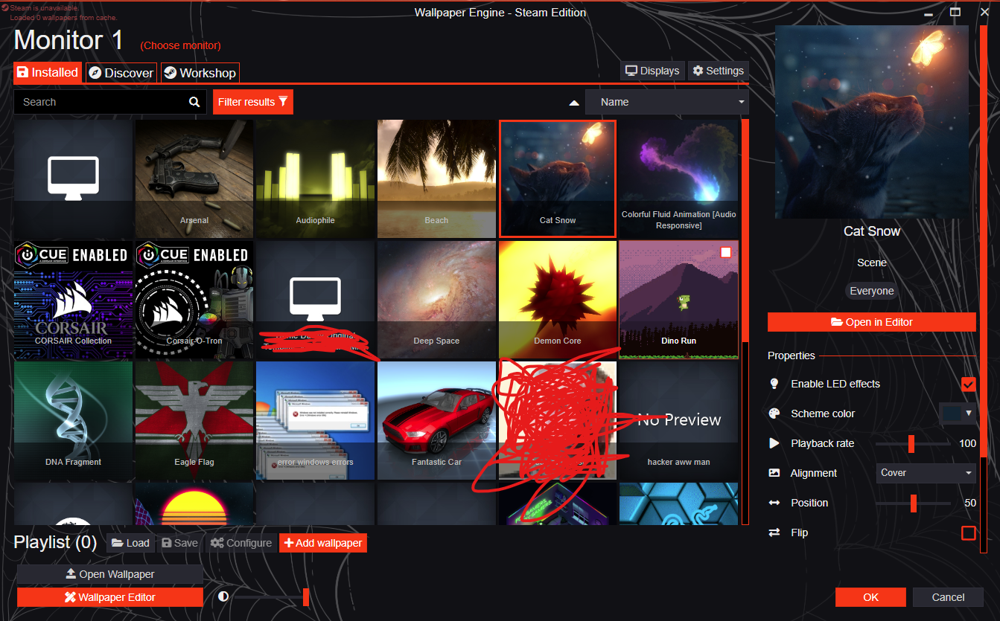

YugiPeep
YugiPeep

Get Wallpaper Engine for free!
Download
To get it, just click on "Download Wallpaper Engine for free!" and you should get a .zip file.
Next, once you have it downloaded, if you have WinRAR then just right click it and do "Extract Here".
If you do not have a zip extracting app, then just go inside of it by double clicking, and drag and drop it to your desired location.
Now once you have the folder "wallpaper_engine" you can name it what ever you want, or keep it that way.
Go inside the folder, and open launcher.exe.
It might say to install, click yes and assign your settings.
Once you have a screen that looks like this you can select Wallpapers. ----->

Have fun!